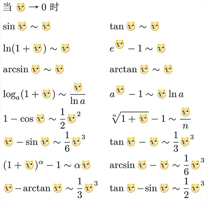

很久之前的高数笔记，如今为了复习而放上来。也许会有大量错漏（就像我的其他blog一样），但我也懒得逐一校对纠正了。
高數筆記
極限
極限的性質
- 唯一性
- 保號性
- 保序性
極限的計算
其他
等價無窮小替換
 重要極限
L’Hospital法則
Taylor公式
函數連續性
間斷點的分類
第一類間斷點
- 可去間斷點：左右極限存在且相等，但是不等於函數值或者函數在這點沒有定義。補充定義或者改變定義即可使函數連續。
- 跳躍間斷點：左右極限存在但是不相等。
第二類間斷點
- 無窮間斷點
- 震盪間斷點
- ……
導數與微分
求導公式
求導法則
鏈法則，複合函數求導法則，隱函數求導法則，對數求導法
高階導數
- Leibniz公式：
- 數學歸納法（通常不完全歸納法即可，不必太嚴謹）
微分中值定理
Fermat定理
對於可導函數，極值點一定是駐點。
證明方法：依據導數的定義，極值點左右導數分別大於等於0和小於等於0，於是極值點一定是駐點。
Rolle定理
閉區間上連續、開區間上可導，區間兩端函數值相等，則開區間內必有一點導數等於0。
證明方法：找出極大值或極小值，使用Fermat定理，在極值點導數爲0。
Lagrange中值定理
閉區間上連續，開區間上可導，則開區間內必有一點，在這點的導數等於區間端點連線的斜率。
證明方法：函數減去區間端點連線的直線方程，使用Rolle定理。
Lagrange中值定理/Rolle定理的題目構造函數的套路：
要證，構造；
要證，構造
要證，構造
要證，構造
Cauchy中值定理
證明方法：作輔助函數 使用Rolle定理。
題目收集
Taylor公式及餘項，Taylor中值定理
證明方法：使用次Cauchy中值定理。
函數階可導，則和之間存在一點，使 其中 時，得Maclauring公式。
常用Taylor公式
均爲
凹凸性
考慮二階導數，證明過程使用Lagrange中值定理。
，則函數爲凸函數；，則函數爲凹函數。（前提是存在，否則還是乖乖用的單調性來判別）。
凹凸形發生改變的點稱爲拐點，注意，拐點處不一定存在。
描繪函數圖形
- 定義域，求一二階導數
- 求出一二階導數爲0/不存在的點
- 列表分析單調性和凹凸性
- 漸近線
- 描出關鍵點
- 畫圖
關於斜漸進線
由，得到，
弧微分和曲率
曲率公式
若曲線由參數方程給出，那麼相應有曲率公式：
不定積分
連續函數必然存在原函數，且其所有原函數相差一個常數。
積分表
這裏只列舉形式比較簡潔而且容易忘記的
求不定積分
第一類換元法
就是凑微分……
考慮使用積化和差。
考慮使用降冪公式。
!!! 關於分段函數的積分 分段求積分，後使用連續函數的性質將兩段的任意常數關聯起來
第二類換元法
設爲連續函數，單調可導，且，若，則
具體而言，可以用來去掉根式。使用三角恆等式做一些三角換元。
也可以暴力使用根式代換。
分子分母次數相差超過1時，可以考慮倒代換。
分部積分
指三冪對反
注意循環式，如
可以用於建立遞推公式，比如
不同函數類型乘積，則往往要用分部積分法
有理函數積分
分式
- 真分式，分母因式分解，可裂項爲四種部分分式，此略
- 使用多項式除法將假分式變爲整式與真分式的和
- 用冪函數法則直接積分
三角函數有理式
- 萬能變換，使用萬能公式（設，則，）
- 通過湊微分，變換爲同名三角函數的有理式
“簡單”無理函數
- 形如，則設
- 形如，則設
- 對於形如的式子，考慮使用倒代換（）
- 乖乖查表
定積分
計算
定義
通常利用定義求定積分的時候採用等分區間的方法，比較簡單，否則十分反人類。
性質
- 線性
- 矩形性
- 區間可加性
- 保號性（區間上，則；推論：）
- 估值定理（）
- 積分中值定理（，使）
利用以上性質，可以比較定積分的大小。
微積分基本定理（Newton-Leibniz公式）
第一基本定理：變上限積分
，則
第二基本定理：Newton-Leibniz公式
其他方法
定積分的換元法、分部積分公式……
注意對稱區間上，奇函數定積分永遠是0
應用
求面積
直角座標下沒什麼好說的：
極座標下利用的“擴展”：
對於參數方程給出的曲線來說，一般而言，按照順時針方向設定上下限；規定曲線的正向爲：不管怎麼走，曲邊梯形總在右手邊。
例子
求雙紐線（）圍成圖形的面積。
求弧長
極座標下，又有：
例子
求星形線的全長和圍成的面積。（提示：寫成參數方程）
求體積
- 常規方法（還有平行截面已知的立體圖形）
- 柱殼法（旋轉體）
反常積分
- 無窮區間積分
- 瑕積分
- 定義：把無限化爲有限，然後求極限
- 廣義積分的Newton-Leibniz公式
- 函數：，
簡單的例子
- 求
- 求
常數項級數
級數的斂散性
若，則稱級數收斂，否則級數發散
級數的餘項，收斂級數的餘項滿足
常數項級數的基本性質
- 若級數收斂，則也收斂，爲任意常數，和也變成倍
- 兩個級數分別收斂，它們的和所成級數也收斂，即兩個級數可以逐項相加或相減
- 把級數加上或去掉有限項不改變級數的收斂性
- 如果級數收斂，對該級數加括號所成級數也收斂
- 如果級數收斂，則一般項極限爲0
正項級數審斂法
比較審斂法
- 一般形式
- 極限形式：若，則兩個級數斂散性相同……
比值審斂法（D’Alember）
設 爲正項級數，且有，若，則級數收斂……
證明方法涉及到與等比級數比較。
根值審斂法（Cauchy）
設 爲正項級數，且有，若，則級數收斂……
證明方法涉及到與等比級數比較。
幾個重要級數
- 調和級數
- p級數（，時收斂，否則發散）「證法：先證調和，後比較審斂」
- 等比級數
交錯級數和任意項級數
Leibniz定理：
交錯級數的一般項單調且趨於0，則級數收斂
證明過程使用了單調有界準則，奇偶分別判斷
絕對收斂定理
加絕對值之後收斂爲絕對收斂，絕對收斂則一定收斂
證明過程構造了一個新級數，十分巧妙。（）
如果不絕對收斂，還可能條件收斂，那麼只能使用Leibniz定理。
Leibniz定理只適用於交錯級數……
若，則原級數一定發散
函數項級數
約定，如果級數的初始值不重要，那麼就省略不寫……
在收斂域上，函數項級數的和是的函數，記爲，稱爲級數的和函數。
冪級數
生成函數有一堆騷操作。——讀《應用組合數學》有感
關於收斂半徑
Abel定理
對於級數：
- 若在收斂，則對於滿足不等式的一切收斂
- 若在發散，則對於滿足不等式的一切 發散
證明構造了一個等比級數，證明結論1，後使用反證法，證明了結論2。
推論和相關的定義
由Abel定理可以推出，冪級數要麼只在收斂，要麼處處收斂，要麼在一個實數“以內”收斂。
由是定義收斂半徑和收斂區間。
需注意，收斂區間不是收斂域，收斂區間去掉了端點
求收斂半徑
對於冪級數，設它的收斂半徑是，那麼
如果，則
可以是或，即無窮小或無窮大。
冪級數的運算性質
加減乘除，其中乘法有一點複雜，跟卷積有點關係。
就是和的卷積，即。
收斂級數的和差積的收斂半徑可能比原先大。
冪級數的和函數性質
- 連續性
- 逐項求導，，注意的取值
- 逐項積分，，注意上下限
兩道題
都是想方設法變成等比級數，用上求導和積分，不過其中可能會涉及一些技巧。
- 求級數的和函數
- 求
兩個重要的函數展開
似乎對於考試而言不是那麼重要
Taylor級數
首先需要注意，泰勒級數未必收斂，收斂也未必收斂於原來的函數。要收斂於原來的函數，需要一定條件，即餘項趨於0:
倪皖湘：不收斂/不收斂於原來的函數是少數情況，我們作業和考試的答案基本沒有驗證是否收斂於原來的函數，所以我們統一不用驗證。
Newton二項展開式
注意和二項式定理區別開，這個公式可以視爲是對二項式定理的擴展
一道題
將展開成冪級數。
歐拉公式：，，sin如法炮製
Fourier級數
三角函數正交系